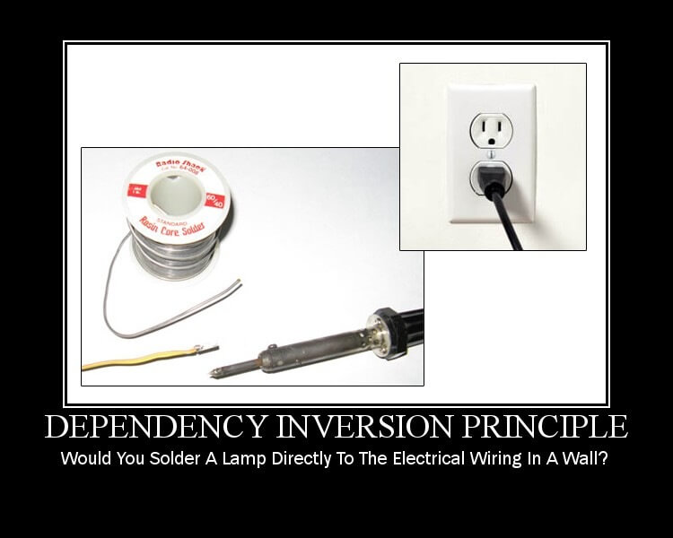
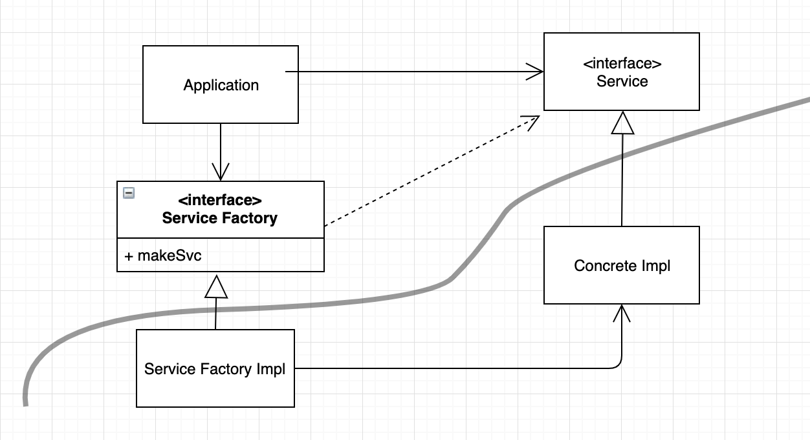

DIP 의존성 역전 원칙
객체 사이에 서로 도움을 받으면 의존 관계가 발생한다. 의존성 역전 원칙은 이러한 관계를 맺을 때 가이드 라인에 해당한다.
DIP 는 한마디로 의존 관계를 맺을 때 변화하기 쉬운것, 또는 자주 변화하는 것 보다는 변화하기 어려운것, 거의 변화가 없는 것에 의존하라는 원칙이다.
DIP가 말하는 유연성이 극대화된 시스템이란 소스 코드 의존성이 추상에 의존하며, 구체에는 의존하지 않는 시스템이다.

위 사진은 의존성 역전 원칙의 근본적인 물음을 나타내주는 사진이다.
“벽속의 전기 배선에 직접 램프를 납땜하시겠습니까?”
과연 어떻게 해야할까?
안정된 추상화
DIP를 논할때 운영체제나 플랫폼 같이 안정성이 보장된 환경에 대해서는 무시한다. 변경되지 않으면 의존할 수 있다.
의존하지 않도록 피해야 할 대상은 변동성이 큰 구체적인 요소다. 대표적인 것으로 개발중인 모듈 이다.
인터페이스는 구현체보다 변동성이 낮다.
실제로 뛰어난 아키텍트라면 인터페이스의 변동성을 낮추기 위해 애쓴다. 즉 변동성이 큰 구현체에 의존하는 일은 지양하고, 안정된 추상 인터페이스를 선호해야 한다.
구체적인 코딩 실천법
변동성이 큰 구체 클래스를 참조하지 말라.
: 대신 추상 인터페이스를 참조하라. 일반적으로 추상 팩토리를 사용하도록 강제한다.
변동성이 큰 구체 클래스로부터 파생하지 말라.
: 상속은 정적타입 언어에서 소스코드에 존재하는 모든 관계중 가장 강력한 동시에 뻣뻣해서 변경하기 어렵다. 따라서 아주 신중히 사용해야 한다. 동적 타입 언어라 해도 의존성을 가진다는 사실은 틀림없다.
구체 함수를 오버라이드 하지 말라.
: 구체 함수는 소스 코드의존성을 필요로 한다. 따라서 구체 함수를 오버라이드 하면 이러한 의존성을 제거할 수 없고, 실제로 그 의존성을 상속하게 된다.
차라리 추상 함수로 선언하고 구현체들에서 각자의 용도에 맞게 구현해야 한다.
구체적이며 변동성이 크다면 절대로 그 이름을 언급하지 말라.
: DIP 원칙 그 자체이다.
팩토리
변동성이 큰 구체적인 객체는 주의해서 생성해야 한다. 자바 등의 대다수 객체지향 언어에서 의존성을 처리할 때 추상 팩토리를 사용하곤 한다.
팩토리 메서드 패턴
: - 조건에 따른 객체 생성을 팩토리 클래스로 위임하여, 팩토리 클래스에서 객체를 생성하는 패턴
: - 즉, new 키워드를 호출하는 부분을 서브 클래스에 위임
: - 결국 팩토리 메소드 패턴은 객체를 만들어내는 공장(Factory 객체)을 만드는 패턴
더 알아보기 : https://jdm.kr/blog/180
추상 팩토리 패턴
: 서로 관련이 있는 객체들을 통째로 묶어서 팩토리 클래스로 만들고, 이들 팩토리를 조건에 따라 생성하도록 다시 팩토리를 만들어서 객체를 생성하는 패턴
더 알아보기 : https://jdm.kr/blog/192

[추상팩토리패턴] 추상 팩토리 팩턴
Application은 ServiceFactory 인터페이스의 makeSvc 메서드를 호출한다. 이 메서드는 ServiceFactoryImpl에서 구현된다. 그리고 ServiceFactoryImpl 구현체가 ConcreteImpl의 인스턴스를 생성한 후, Service 타입으로 반환한다.
결국은 Application이 어떻게 ConcreteImpl를 생성해야 하는지를 보여준다.
또한, 곡선은 아키텍처 경계를 뜻한다. 구체적인 것들로 부터 추상적인걸 분리한다.
제어 흐름은 소스 코드 의존성과는 정반대 방향으로 곡선을 가로지른다. 소스 코드 의존성은 제어 흐름과는 반대 방향으로 역전되며 이 원칙을 의존성 역전(Dependency Inversion) 이라고 부른다.
또한 의존성은 이 곡선을 경계로, 더 추상적인 엔티티가 있는 쪽으로만 향하며 이 규칙을 의존성 규칙이라 한다.
출처
https://victorydntmd.tistory.com/300
https://exceptionnotfound.net/simply-solid-the-dependency-inversion-principle/